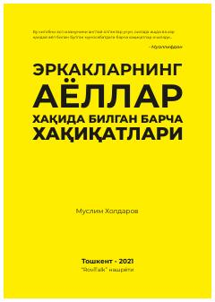

EAErkaklarning ayollar bilan munosabatlari va psixologiyasiga bag'ishlangan kitob.
Ushbu kitob erkaklarning ayollar haqidagi qarashlari, oiladagi va ish faoliyatidagi munosabatlarning sir-asrorlari haqida hikoya qiladi. Ko'p yillik tajribalar asosida yozilgan ushbu asar munosabatlardagi ko'plab savollarga javob beradi.